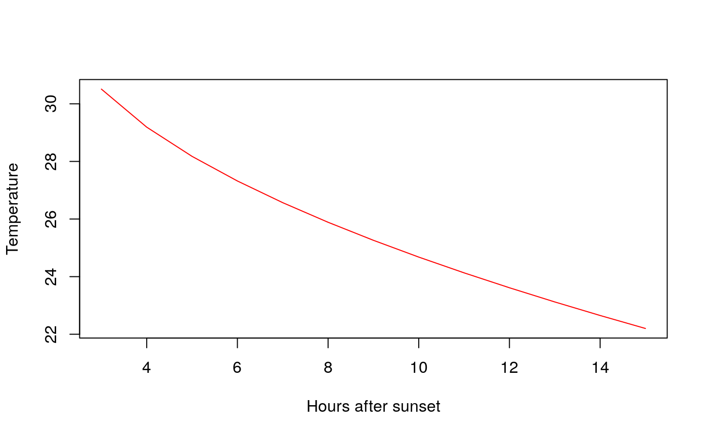

frost package
Ana Laura Diedrichs
2019-06-25
Introduction.RmdPrediction of minimum temperature for frost forecasting in agriculture
Description
This package contains a compilation of empirical methods used by farmers and agronomic engineers to predict the minimum temperature to detect a frost event.
These functions use variables such as environmental temperature, relative humidity, and dew point.
Dew point estimation
Given that several methods used dew point as an input variable, this package provides methods to estimate the dew point (in Celsius degree) given ambient temperature and relative humidity.
library(frost)
temp <- 25
rh <- 54
calcDewPoint(rh,temp,mode="A")
#> [1] 14.99222
calcDewPoint(rh,temp,mode="B")
#> [1] 24.07111
calcDewPoint(rh,temp,mode="C")
#> [1] 15.04884Temperature conversions
Most of the predictive methods use temperature in degree Celsius, so maybe you want to convert your temperature values to this unit. You can use the method convert.temperature to achieve this, and convert from/to Kelvin (K), Fahrenheit (F) or Celcius (C).
library(frost)
library(frost)
convert.temperature(from="K", to="C",350)
#> [1] 76.85
cels <- convert.temperature(from="F",to="C",c(120,80,134,110))
k <- convert.temperature(from="C", to="K",cels)Prediction of minimum temperature
FAO approach
The empirical formula for estimating the minimum temperature is \(T_{min} = a * T + b * T_{dew} + c\). For calculating the coefficientes \(a, b\) and \(c\) we call buildFAO(dw,temp,tmin).
library(frost)
# We create random data
x1 <- rnorm(100,mean=2,sd=5)
x2 <- rnorm(100,mean=1,sd=3)
y <- rnorm(100,mean=0,sd=2)
buildFAO(dw = x2,temp=x1,tmin=y)
#> An object of class "FAOFrostModel"
#> Slot "a":
#> [1] 0.02458073
#>
#> Slot "b":
#> [1] 0.0451533
#>
#> Slot "c":
#> [1] 0.08151172
#>
#> Slot "Tp":
#> [1] 0.3921330628 0.2853016045 0.1433752326 0.2640206883 -0.0006286348
#> [6] 0.1973739417 -0.2951744023 0.0280735770 0.1127998406 0.4511493912
#> [11] 0.0002969188 0.3266258992 0.1170402009 0.2194601883 0.2763381955
#> [16] 0.1140945095 0.1422516550 0.2469221002 0.0924176914 0.1909377191
#> [21] 0.2223345609 0.3885555387 0.1877427179 0.0890774729 0.1012515841
#> [26] 0.2165108773 0.3577818126 0.2164010519 -0.0620514401 0.1012627049
#> [31] 0.3375572318 -0.0153089860 0.0949766343 0.2765679908 0.0552144137
#> [36] 0.3903532514 0.2269140397 0.3318571414 0.1668030596 0.2976609923
#> [41] 0.3173009389 0.0731794436 0.3282788738 0.4836362358 0.1680365202
#> [46] 0.1976409483 0.0578368485 0.0415348549 0.0033683876 0.2483581191
#> [51] 0.0367539831 -0.1248917984 0.0481978017 0.2615367888 0.3270244320
#> [56] 0.0680315611 0.1293176238 0.1073961210 0.1725408073 0.1002747901
#> [61] 0.2149458298 0.2590104526 -0.1668716497 0.2008169443 0.3680435567
#> [66] -0.0773962487 0.1217217644 0.0371489471 0.0807245216 0.2777072042
#> [71] 0.0474101633 0.0869703058 0.0247668462 0.2988729433 0.4972177395
#> [76] 0.4342428871 0.3362408883 0.2757207413 0.1615449172 0.0675545741
#> [81] 0.2531725919 0.3168388988 0.2894695773 0.1100864829 0.0930225161
#> [86] 0.3034161866 0.0314621042 0.1469631710 0.0677520756 0.4227575562
#> [91] 0.0665767126 0.2676290417 0.2086310614 0.1984215054 0.1316834816
#> [96] 0.1226571593 0.1649336919 0.0756556414 0.2763790579 -0.1136739724
#>
#> Slot "Rp":
#> [1] 0.022679157 0.838277137 -3.239681239 -2.195348524 -2.149301934
#> [6] -0.154452235 -0.341774637 -0.937591695 -1.196489628 -1.639431004
#> [11] 1.495044784 -1.190280118 -1.368712428 -0.970518404 0.676158731
#> [16] 2.568277514 1.536580272 -1.207712888 1.412023034 0.311716363
#> [21] -0.398650756 -1.181409344 -1.426997209 1.350646312 2.859107255
#> [26] 3.885451613 -2.123878599 1.242593231 0.410071549 -1.577144443
#> [31] -2.311355553 -0.535391256 0.080848553 3.031343607 -0.122871276
#> [36] -3.958655010 1.181167708 0.239294495 0.574476321 -0.559822323
#> [41] 2.372195651 3.006225651 -3.778165786 1.993424894 0.999255535
#> [46] 1.607984710 -1.172107401 -0.073506476 -1.898571933 0.627368571
#> [51] -0.417048578 2.432785193 -0.443808265 -4.381075642 -1.699794005
#> [56] 4.246369108 1.060334414 0.609786436 -0.837757749 0.009786149
#> [61] 3.669025535 2.227371300 -2.185553477 -0.632658946 -0.549094675
#> [66] 2.896997974 1.361414678 2.157401545 0.918446682 -1.468360066
#> [71] -2.225297081 1.264308732 -2.983040008 4.063096182 0.293313500
#> [76] 1.204230112 -2.043017759 0.142666699 -2.800733579 -3.010238867
#> [81] -0.336929396 2.585544433 1.526158579 -2.825959112 3.251025907
#> [86] 1.418361221 -1.391519652 -2.220826374 -2.944078517 0.793997929
#> [91] -1.762345513 2.461773734 1.175678607 2.121122920 -2.056804239
#> [96] -0.563998363 1.689243886 1.756893781 -1.809077663 -2.360508268
#>
#> Slot "r2":
#> [1] 0.005417504
# data example taken from FAO Book
t0 <- c(3.2,0.8,0.2,2.6,4.4,5.2,2.7,1.2,4.5,5.6) # temperature 2 hours after sunset
td <- c(-4.2,-8.8,-6.5,-6.2,-6.1,2.6,-0.7,-1.7,-1.2,0.1) # dew point 2 hours after sunset
tn <- c(-3.1,-5,-6.3,-5.4,-4,-2.5,-4.8,-5,-4.4,-3.3)
out <- buildFAO(dw = td,temp=t0,tmin=tn)
# We use the results of the model to have the coefficients for the formula
current_temp <- 10
current_dw <- 2
ptmin <- predFAO(out,current_temp,current_dw)
cat("The predicte minimum temperature is ",ptmin," °C")
#> The predicte minimum temperature is -0.7409219 °C
# We plot the temperature trend, we have 12 hours until sunrise
getTrend(Tmin = ptmin ,t2 = current_temp,n = 12,plot=TRUE) # in °C degress
#> x y
#> 1 3 6.6034223
#> 2 4 5.1965137
#> 3 5 4.1169548
#> 4 6 3.2068445
#> 5 7 2.4050213
#> 6 8 1.6801177
#> 7 9 1.0135000
#> 8 10 0.3930274
#> 9 11 -0.1897332
#> 10 12 -0.7409219We can plot an estimated temperature trend during a frost night, calculated using the FAO recomendation.
library(frost)
getTrend(Tmin = 22.2,t2 = 33.7,n = 15) # in °F degress
#> x y
#> 1 3 30.51047
#> 2 4 29.18933
#> 3 5 28.17558
#> 4 6 27.32095
#> 5 7 26.56800
#> 6 8 25.88729
#> 7 9 25.26131
#> 8 10 24.67866
#> 9 11 24.13142
#> 10 12 23.61383
#> 11 13 23.12154
#> 12 14 22.65116
#> 13 15 22.20000
getTrend(Tmin = -5.45,t2 = 0.95,n = 15, plot=TRUE) # in °C degress
#> x y
#> 1 3 -0.8250406
#> 2 4 -1.5602865
#> 3 5 -2.1244606
#> 4 6 -2.6000813
#> 5 7 -3.0191115
#> 6 8 -3.3979438
#> 7 9 -3.7463161
#> 8 10 -4.0705731
#> 9 11 -4.3751219
#> 10 12 -4.6631713
#> 11 13 -4.9371438
#> 12 14 -5.1989211
#> 13 15 -5.4500000
We can use the output of plotTrend to plot using other libraries such as ggplot2.
library(frost)
var <- getTrend(Tmin = -5.45,t2 = 0.95,n = 15) # in °C degress
require(ggplot2)
#> Loading required package: ggplot2
#> Registered S3 methods overwritten by 'ggplot2':
#> method from
#> [.quosures rlang
#> c.quosures rlang
#> print.quosures rlang
# just plotting points
ggplot(var,aes(x=x,y=y)) + geom_point(color="blue")
# add trend line
ggplot(var,aes(x=x,y=y)) + geom_point() + geom_smooth(color="red")
#> `geom_smooth()` using method = 'loess' and formula 'y ~ x'